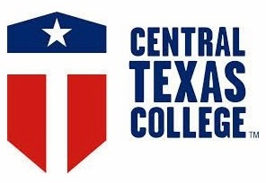

Resume
William G. Phillips
12 Granite Court
Fredericksburg, VA 22406
Phone: (347) 260-4672 (C)
gregphillips03@gmail.com
greg.phillips@aecom.com
Bachelor of Science in Computer Science with Minor in Data Science
University of Mary Washington, Fredericksburg, VA
100+ Credits, GPA: 3.7
Bachelor of Science in Computer Information Systems, Software Engineering and Database Design
Texas A&M University Central Texas, Killeen, TX
August 2013, GPA: 4.0
Delta Mu Delta Honor Society Inductee (Excellence in Business Administration)

Associate of Science in Applied Science in Network Systems Administration
Central Texas College, Killeen, TX
August 2012, GPA: 3.9
Graduated with Honors
Associate in General Studies
Central Texas College, Killeen, TX
May 2012, GPA: 3.9
Graduated with Honors
Associate in Applied Science in Computer Science and Information Technology
Central Texas College, Killeen, TX
August 2011, GPA: 3.9
Graduated with Honors
Current (as of April 2016)
Will provide clearance level upon request
Data Interpretation and Analysis through Machine Learning, Quantitative Reasoning, and Qualitative Reasoning.
Software Engineering and Database Design.
Source Code Delivery and Maintenance.
Software / Application Development Life Cycle (SDLC / ADLC).
Project Level Management.
TapRooT Root Cause Analysis.
Environmental, Health and Employee Safety.
11 years AH-64D Airframe.
Technical Collaborations and Support Manager, Corporate Safety, Health, & Environmental
AECOM Corporate
March 2015 – Present
Provides information technology solutions for data capture and information creation in support of Safety, Health, & Environmental (SH&E) operations at the corporate level.
Performs data analysis through various methods and approaches such as machine learning and quantitative reasoning.
Performs quality analysis of SH&E data both for governmental compliance and internal reporting metrics
Operates, maintains, and customizes a SH&E online reporting software suite for an end user population of ~120,000+ employees and contractors
Provides technical advice to SH&E Directors and Managers to properly collect, aggregate, and analyze SH&E data.
Maps, transforms, and retires legacy databases while integrating data with current databases for historical use and analysis.
Analyzes and assesses third-party software capabilities for integration into enterprise resource planning platforms.
Creates guidance and end user documentation through videos and interactive PDFs.
Seamlessly migrated AECOM’s Safety, Health, and Environmental online reporting software from Active Domain Federation Services (ADFS) to OKTA for Single Sign On (SSO) authentication with no impact to a general end user population of 85,000+ employees.
Implemented and deployed a Safety, Health, and Environmental helpdesk platform where one did not exist. This platform has, since its inception, achieved no less than a 90% end user satisfaction rate.
Provided the first known analysis of AECOM’s Safety, Health, and Environmental data by applying network based graph theory concepts and machine learning algorithms to its interpretation.
Selected above peers to serve as a the information technology resource consultant for a SH&E technology innovations committee. The committee seeks to assess and implement new software and hardware technologies for integration into SH&E processes.
Safety, Health, & Environmental Manager
AECOM / McLean VA
March 2014 – March 2015
Manages, plans, and executes employee training for a government facilities and maintenance contract operation of 600+ maintenance, logistical, and administrative personnel.
Documents training records for all employees.
Enforces compliance of safety directives in accordance with OSHA guidelines and regulations.
Implements training programs that enforce safety standards and mitigate in cooperation with government counterparts.
Trains employees on environmental, health, and safety related information per OSHA General Industry directives.
Performs root-cause analysis on mishaps, injuries, and near miss incidents in order to develop lessons-learned information and new safety directives by analyzing relevant trend data.
Provided management and leadership continuity to a government program during a restructuring period amongst Safety, Health, and Environmental personnel.
Safety and Training Manager
AECOM / Southwest Asia
December 2013 – March 2014
Safety and Training Supervisor
AECOM / FOB Shank, Afghanistan
October 2013 – December 2013
Developed a risk mitigation program, when the program did not exist. This program was implemented at a theatre level, and used at 8 other maintenance sites across Kuwait, Saudi Arabia, Iraq, Egypt, and Kuwait.
Effectively coordinated with military assets in order to care for injured employees, when contract medical support did not exist. This effectively lowered the Total Recordable Injury Rate on site by 22%.
Maintenance Lead Mechanic, AH-64D
AECOM / FOB Shank, Afghanistan
January 2013- October 2013
Provides oversight for maintenance operations in support of a United States Government contract. Delegates work tasks to subordinate employees. Manages maintenance operations for multiple aircraft; trains employees on aircraft specific procedures, ground service equipment, and special process operations.
Selected above peers to lead routine and non-routine maintenance operations.
Successfully led concurrent, non-routine, and phased maintenance operations in the absence of other Lead Mechanics.